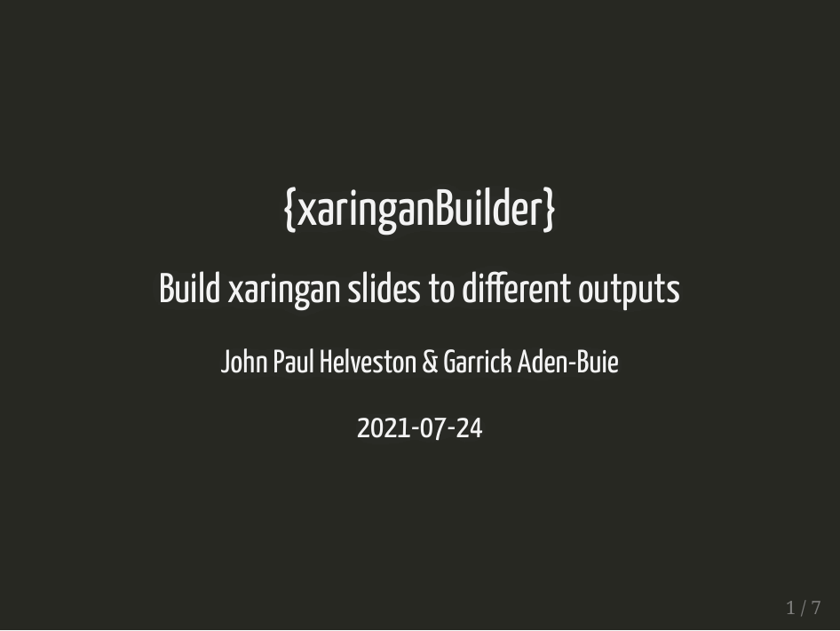
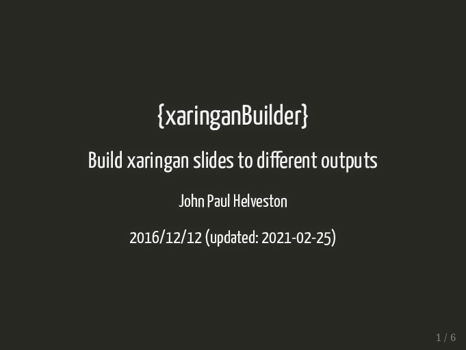

xaringanBuilder
Build xaringan slides to multiple output formats:
- html
- gif
- pptx
- mp4
- png
- social (png of first slide sized for sharing on social media)
Installation
You can install the current version of xaringanBuilder from GitHub:
# install.packages("remotes")
remotes::install_github("jhelvy/xaringanBuilder")Build hierarchy
Some output types depend on intermediate outputs. Here is a diagram of the build hierarchy:
Usage
You can build all of the examples below from here
library(xaringanBuilder)Input - Output
All build_*() functions use the input and output_file arguments.
The input argument is required and can be a full or local path to the input file.
The output_file argument is optional. If provided, it can be a full or local path to the output file, and it must end in an appropriate extension (e.g. slides.gif for build_gif()). If it is not provided, the output file name will be determined based on the input argument.
Build PDF
Input can be a Rmd file, html file, or url:
build_pdf("slides.Rmd")
build_pdf("slides.html")
build_pdf("https://jhelvy.github.io/xaringanBuilder/reference/figures/slides.html")Note: Building the PDF requires a local installation of Google Chrome
Build GIF
Input can be a Rmd file, html file, pdf file, or url:
build_gif("slides.Rmd")
build_gif("slides.html")
build_gif("slides.pdf")
build_gif("https://jhelvy.github.io/xaringanBuilder/reference/figures/slides.html")Example:

Build PPTX
Creates a pptx file where each slide contains a png image of each xaringan slide. While you won’t be able to edit the xaringan content from Powerpoint, you can at least annotate it.
(See the slidex package by @datalorax to do the opposite: pptx –> xaringan!)
Input can be a Rmd file, html file, pdf file, or url:
build_pptx("slides.Rmd")
build_pptx("slides.html")
build_pptx("slides.pdf")
build_pptx("https://jhelvy.github.io/xaringanBuilder/reference/figures/slides.html")Build PNG
Build png image(s) of some or all slides. Use the slides argument to determine which slides to include (defaults to 1, returning just the first slide) .
Input can be a Rmd file, html file, pdf file, or url:
# By default, creates a png of only the first slide:
build_png("slides.Rmd")
build_png("slides.html")
build_png("slides.pdf")
build_png("https://jhelvy.github.io/xaringanBuilder/reference/figures/slides.html")
# Build zip file of multiple or all slides
build_png("slides.pdf", slides = c(1, 3, 5))
build_png("slides.pdf", slides = "all")Example:

Build All Output Types
Use build_all() to build all output types from a Rmd file:
# Builds every output by default
build_all("slides.Rmd")Use the include or exclude arguments to control which output types to include or exclude:
“Complex” slides and partial / incremental slides
“Complex” slides are slides that contain panelsets or other html widgets / advanced features that might not render well as a pdf. To render these on each slide, set complex_slides = TRUE.
If you want to build a new slide for each increment on incremental slides, set partial_slides = TRUE.
These options are available as options in any of the functions that depend on building the pdf:
Note: These options require the chromote and pdftools packages.
Local Chrome installation requirement
Building the PDF requires a local installation of Chrome. If you don’t have Chrome installed, you can use other browsers based on Chromium, such as Chromium itself, Edge, Vivaldi, Brave, or Opera. In this case, you will need to set the path to the browser you want to use for the pagedown package as well as the chromote package if you use the complex_slides = TRUE or partial_slides = TRUE arguments.
After installing the packages, you can set the paths like this:
Sys.setenv(PAGEDOWN_CHROME = "/path/to/browser")
Sys.setenv(CHROMOTE_CHROME = "/path/to/browser")If you are unable to install Chrome (e.g. on a computing cluster), the recommended workflow is to build intermediate output formats and use an alternative method for building the PDF.
For example, to build a pptx from a Rmd file without Chrome, you could:
- Build the html with
build_html("slides.Rmd") - Use vscode remote and vscode-preview-server extension to open the html on a local machine (preferrably with Chrome installed)
- Save to pdf on Chrome
- Build the pptx with
build_pptx("slides.pdf")
Citation Information
If you use this package in a publication, I would greatly appreciate it if you cited it. You can get the citation information by typing citation("xaringanBuilder") into R:
To cite xaringanBuilder in publications use:
John Paul Helveston (2021). xaringanBuilder: Functions for building xaringan slides to different outputs.
A BibTeX entry for LaTeX users is
@Manual{, title = {xaringanBuilder: Functions for building xaringan slides to different outputs.}, author = {John Paul Helveston}, year = {2021}, note = {R package version 0.0.7}, url = {https://jhelvy.github.io/xaringanBuilder/}, }